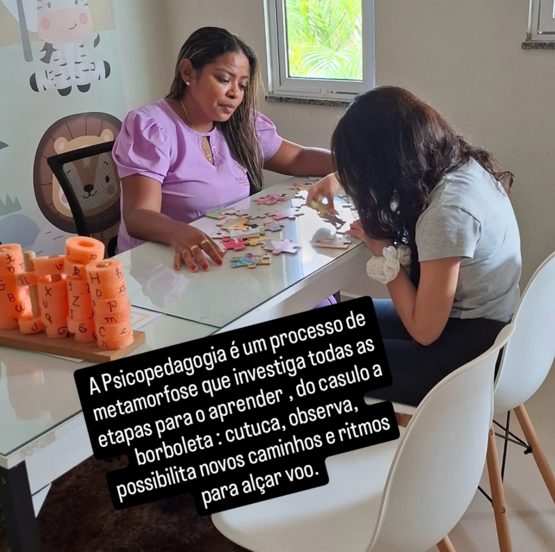

Bem-vindo
Acompanhamento psicopedagógico humanizado, focado no desenvolvimento, aprendizado e bem-estar emocional.
Sobre mim
Sou psicopedagoga especializada em compreender como cada pessoa aprende, reconhecendo que o processo de aprendizagem é único e influenciado por fatores cognitivos, emocionais, sociais e pedagógicos. Entendo que as dificuldades de aprendizagem não definem capacidades, mas indicam caminhos que precisam ser melhor trabalhados e compreendidos. Atuo de forma individualizada, desenvolvendo estratégias personalizadas que respeitam o ritmo e as potencialidades de cada pessoa. Meu objetivo é promover a superação de dificuldades, fortalecer a autonomia e a autoestima, e tornar a aprendizagem uma experiência significativa e transformadora, em um ambiente acolhedor e de confiança.
Agendar avaliação
Momentos
Como trabalho
Cada sujeito aprende de forma única.
Estratégias adaptadas à necessidade de cada pessoa.
A família faz parte do processo de aprendizagem.
Conteúdos
Artigos sobre aprendizagem, desenvolvimento e psicopedagogia. Os textos serão publicados aqui assim que o blog estiver conectado ao Firebase.
Em breve, novos artigos
Esta área será alimentada automaticamente quando o Firebase estiver ligado ao site.
Dúvidas
Inclui entrevistas, observações e instrumentos específicos.
Duração da sessão: 1h30min.
Fale comigo
Informações do espaço, horários e como chegar. Preencha o formulário para falar comigo no WhatsApp.
Espaço Psicopedagogico: Conexão Ativa
Horário de atendimento: Sábado, das 7h às 18h
Duração da sessão: 1h30min
Rua Lauro Alves de Miranda, Bairro Santa Paulina n. 264, Jaguaribe, CE
Abrir no Google MapsPreencha os campos abaixo. Você será direcionado ao WhatsApp com a mensagem pronta.